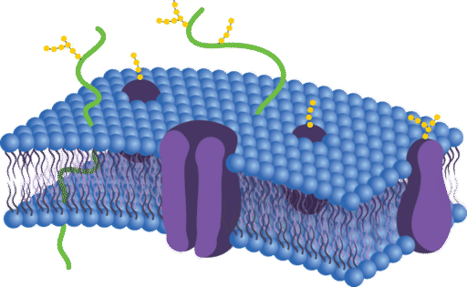

TRANSPORTE A TRAVÉS DE LA MEMBRANA
La membrana celula se compone de una bicapa de fosfolípidos, donde las cabezas hidrófilas están en los extremos y las colas hidrófobas se encuentran en el interior.

La membrana no es una estructura impenetrable. Su objetivo es controlar las sustancias y elementos que entran o salen de la célula. Para este efecto hay proteínas que transportan los elementos que no pueden pasar libremente por la membrana. Además, la membrana permite que una célula se comunique con células adyacentes.